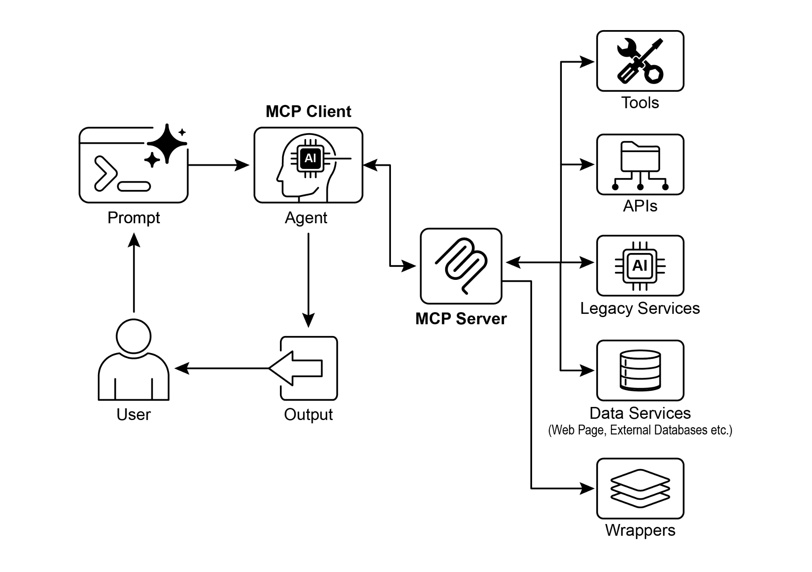

读书 · Agentic Design Patterns · 中英对照
第 10 章 · 模型上下文协议 Model Context Protocol
Chapter 10: Model Context Protocol · 《Agentic Design Patterns》 · Antonio Gulli · 2025
介绍MCP这一开放标准，用客户端-服务器架构统一LLM与外部工具、数据源的连接方式。
← 返回导读 原书 PDF 上一章:第9章 下一章:第11章
本章要点
① MCP是开放标准，让任意LLM以统一方式发现并调用外部工具、资源与提示 ① 采用客户端-服务器架构，支持动态发现、可复用与联邦式集成 ① MCP与工具函数调用不同：前者标准化、可发现、跨厂商互操作 ① 底层API需为智能体优化（过滤、排序、可解析格式），MCP本身不保证
本章一图流
开放标准MCP统一LLM连接外部能力→客户端-服务器动态发现与联邦集成→区别于函数调用标准化、可发现、跨厂商→底层API优化过滤排序，MCP不保证
MCP用开放标准与客户端-服务器架构，统一LLM与外部工具连接，但底层API仍需自行优化。
原书插图

本章划线句
划线句(逐字校验)
"Imagine a universal adapter that allows any LLM to plug into any external system, database, or tool without a custom integration for each one."
为什么值得划线:用万能适配器比喻，一句话点明MCP的核心价值。
划线句(逐字校验)
"In short, function calling provides direct access to a few specific functions, while MCP is the standardized communication framework that lets LLMs discover and use a vast range of external resources."
为什么值得划线:精炼区分函数调用与MCP的定位差异。
划线句(逐字校验)
"This highlights that agents do not magically replace deterministic workflows; they often require stronger deterministic support to succeed."
为什么值得划线:提醒智能体仍需确定性API支撑，避免盲目封装旧接口。
正文(英中对照)
第10章：模型上下文协议（Model Context Protocol） Chapter 10: Model Context Protocol
"To enable LLMs to function effectively as agents, their capabilities must extend beyond multimodal generation. Interaction with the external environment is necessary, including access to current data, utilization of external software, and execution of specific operational tasks. The Model Context Protocol (MCP) addresses this need by providing a standardized interface for LLMs to interface with external resources. This protocol serves as a key mechanism to facilitate consistent and predictable integration. MCP Pattern Overview Imagine a universal adapter that allows any LLM to plug into any external system, database, or tool without a custom integration for each one. That's essentially what the Model Context Protocol (MCP) is."
为了让 LLM 有效充当 agent（智能体），其能力必须超越多模态生成。与外部环境交互是必要的，包括访问当前数据、使用外部软件以及执行特定操作任务。Model Context Protocol（MCP，模型上下文协议）通过为 LLM 与外部资源对接提供标准化接口来满足这一需求。该协议是促进一致且可预测集成的关键机制。MCP 模式概览：想象一个通用适配器，让任何 LLM 都能接入任何外部系统、数据库或工具，而无需为每一个单独做定制集成。这本质上就是 Model Context Protocol（MCP）。
导读注:MCP 是 LLM 接入外部世界的通用适配器，标准化接口是其核心价值。
"It's an open standard designed to standardize how LLMs like Gemini, OpenAI's GPT models, Mixtral, and Claude communicate with external applications, data sources, and tools. Think of it as a universal connection mechanism that simplifies how LLMs obtain context, execute actions, and interact with various systems. MCP operates on a client-server architecture. It defines how different elements—data (referred to as resources), interactive templates (which are essentially prompts), and actionable functions (known as tools)—are exposed by an MCP server. These are then consumed by an MCP client, which could be an LLM host application or an AI agent itself."
这是一个开放标准，旨在标准化 LLM（如 Gemini、OpenAI 的 GPT 模型、Mixtral 和 Claude）与外部应用、数据源和工具之间的通信方式。可以把它看作一种通用连接机制，简化了 LLM 获取上下文、执行操作以及与各种系统交互的过程。MCP 采用客户端-服务器架构运行。它定义了 MCP 服务器如何暴露不同元素——数据（称为 resources）、交互式模板（本质上就是 prompt）和可执行函数（称为 tools）。这些元素随后由 MCP 客户端消费，而 MCP 客户端可以是 LLM 宿主应用，也可以是 AI agent 本身。
导读注:MCP 是标准化 LLM 与外部系统通信的开放协议，核心是客户端-服务器架构。
"This standardized approach dramatically reduces the complexity of integrating LLMs into diverse operational environments. However, MCP is a contract for an "agentic interface," and its effectiveness depends heavily on the design of the underlying APIs it exposes. There is a risk that developers simply wrap pre-existing, legacy APIs without modification, which can be suboptimal for an agent. For example, if a ticketing system's API only allows retrieving full ticket details one by one, an agent asked to summarize high-priority tickets will be slow and inaccurate at high volumes."
这种标准化方法大幅降低了将 LLM 集成到多样化运营环境中的复杂性。然而，MCP 是一种"代理式接口"（agentic interface）的契约，其有效性在很大程度上取决于它所暴露的底层 API 的设计。存在一种风险：开发者只是不加修改地封装既有的遗留 API，而这对 agent 而言可能并非最优。例如，如果某个工单系统的 API 只允许逐条检索完整的工单详情，那么当被要求汇总高优先级工单时，agent 在高数据量下就会又慢又不准确。
导读注:MCP 只是契约，效果取决于底层 API 设计，直接封装遗留 API 可能拖累 agent。
"To be truly effective, the underlying API should be improved with deterministic features like filtering and sorting to help the non-deterministic agent work efficiently. This highlights that agents do not magically replace deterministic workflows; they often require stronger deterministic support to succeed. 1 Furthermore, MCP can wrap an API whose input or output is still not inherently understandable by the agent. An API is only useful if its data format is agent-friendly, a guarantee that MCP itself does not enforce. For instance, creating an MCP server for a document store that returns files as PDFs is mostly useless if the consuming agent cannot parse PDF content."
要真正发挥效用，底层 API 应通过过滤和排序等确定性特性加以改进，以帮助非确定性的 agent 高效工作。这凸显出 agent 并不会神奇地取代确定性工作流；它们往往需要更强的确定性支持才能成功。1 此外，MCP 可以封装一个输入或输出对 agent 而言仍无法天然理解的 API。一个 API 只有在其数据格式对 agent 友好时才有用，而这一保证 MCP 本身并不强制。例如，为一个以 PDF 形式返回文件的文档存储创建 MCP server，如果消费该服务的 agent 无法解析 PDF 内容，那基本毫无用处。
导读注:agent 不取代确定性工作流，反而更依赖过滤排序等确定性支持，且 MCP 不保证数据格式对 agent 友好。
"The better approach would be to first create an API that returns a textual version of the document, such as Markdown, which the agent can actually read and process. This demonstrates that developers must consider not just the connection, but the nature of the data being exchanged to ensure true compatibility. MCP vs. Tool Function Calling The Model Context Protocol (MCP) and tool function calling are distinct mechanisms that enable LLMs to interact with external capabilities (including tools) and execute actions. While both serve to extend LLM capabilities beyond text generation, they differ in their approach and level of abstraction."
更好的方法是先创建一个 API，返回文档的文本版本（如 Markdown），这样 agent 才能真正读取和处理。这表明开发者不仅要考虑连接，还要考虑所交换数据的性质，以确保真正的兼容性。MCP 与工具函数调用：模型上下文协议（Model Context Protocol，MCP）和工具函数调用是两种不同的机制，使 LLM 能够与外部能力（包括工具）交互并执行操作。虽然两者都用于将 LLM 的能力扩展到文本生成之外，但它们在方法和抽象层次上有所不同。
导读注:强调数据性质决定兼容性，并区分 MCP 与工具函数调用。
"Tool function calling can be thought of as a direct request from an LLM to a specific, pre-defined tool or function. Note that in this context we use the words "tool" and "function” interchangeably. This interaction is characterized by a one-to-one communication model, where the LLM formats a request based on its understanding of a user's intent requiring external action. The application code then executes this request and returns the result to the LLM. This process is often proprietary and varies across different LLM providers. In contrast, the Model Context Protocol (MCP) operates as a standardized interface for LLMs to discover, communicate with, and utilize external capabilities."
工具函数调用（Tool function calling）可以看作是大语言模型（LLM）向某个特定的、预定义的工具或函数发出的直接请求。请注意，在此语境下，我们互换使用“工具”和“函数”这两个词。这种交互的特征是一对一的通信模型，即 LLM 根据其对用户意图的理解来格式化请求，而该意图需要外部操作。随后，应用代码执行该请求并将结果返回给 LLM。这一过程通常是专有的，并且因不同的 LLM 提供商而异。相比之下，模型上下文协议（Model Context Protocol, MCP）则作为一种标准化接口，供 LLM 发现、通信并利用外部能力。
导读注:对比工具函数调用与 MCP：前者是一对一专有交互，后者是标准化接口。
"It functions as an open protocol that facilitates interaction with a wide range of tools and systems, aiming to establish an ecosystem where any compliant tool can be accessed by any compliant LLM. This fosters interoperability, composability and reusability across different systems and implementations. By adopting a federated model, we significantly improve interoperability and unlock the value of existing assets. This strategy allows us to bring disparate and legacy services into a modern ecosystem simply by wrapping them in an MCP-compliant interface. These services continue to operate independently, but can now be composed into new applications and workflows, with their collaboration orchestrated by LLMs."
它作为一个开放协议，促进与广泛工具和系统的交互，旨在建立一个生态系统，使任何符合规范的工具都能被任何符合规范的 LLM 访问。这促进了不同系统和实现之间的互操作性、可组合性和可复用性。通过采用联邦模型，我们显著提升了互操作性并释放了现有资产的价值。这一策略使我们能够仅通过将分散的和遗留的服务包装成符合 MCP 的接口，就把它们带入现代生态系统。这些服务继续独立运行，但现在可以被组合成新的应用和工作流，并由 LLM 编排它们的协作。
导读注:联邦模型+MCP 包装让遗留服务无需重写即可被 LLM 编排复用。
"This fosters agility and reusability without requiring costly rewrites of foundational systems. 2 Here's a breakdown of the fundamental distinctions between MCP and tool function calling: Feature Tool Function Calling Model Context Protocol (MCP) Standardization Proprietary and An open, standardized protocol, vendor-specific. The format promoting interoperability and implementation differ between different LLMs and tools. across LLM providers. Scope A direct mechanism for an A broader framework for how LLM to request the LLMs and external tools discover execution of a specific, and communicate with each predefined function. other."
这促进了敏捷性和可复用性，而无需对基础系统进行昂贵的重写。2 以下是 MCP 与工具函数调用之间根本区别的分解：特性 工具函数调用 模型上下文协议（Model Context Protocol, MCP） 标准化 专有且特定于供应商。不同 LLM 和工具之间的格式与实现各不相同。一个开放、标准化的协议，促进跨 LLM 提供商的互操作性。范围 一种直接机制，供 LLM 请求执行特定的、预定义的函数。一个更广泛的框架，规定 LLM 与外部工具如何相互发现和通信。
导读注:MCP 与工具函数调用的核心差异在于标准化与范围：前者开放互通，后者专有局限。
"Architecture A one-to-one interaction A client-server architecture where between the LLM and the LLM-powered applications application's tool-handling (clients) can connect to and utilize logic. various MCP servers (tools). Discovery The LLM is explicitly told Enables dynamic discovery of which tools are available available tools. An MCP client can within the context of a query a server to see what specific conversation. capabilities it offers. Reusability Tool integrations are often Promotes the development of tightly coupled with the reusable, standalone "MCP specific application and servers" that can be accessed by LLM being used. any compliant application."
架构 A 一对一交互 一种客户端-服务器架构，其中 LLM 与 LLM 驱动的应用程序（客户端）之间可以连接并使用各种 MCP 服务器（工具）。发现 明确告知 LLM 在特定对话的上下文中哪些工具可用。支持动态发现可用工具。MCP 客户端可以查询服务器以了解其提供哪些能力。可复用性 工具集成通常与特定应用程序和所使用的 LLM 紧密耦合。促进可复用的、独立的“MCP 服务器”的开发，任何兼容的应用程序都可以访问这些服务器。
导读注:对比两种架构：动态发现与可复用 MCP 服务器是解耦关键。
"Think of tool function calling as giving an AI a specific set of custom-built tools, like a particular wrench and screwdriver. This is efficient for a workshop with a fixed set of tasks. MCP (Model Context Protocol), on the other hand, is like creating a universal, standardized power outlet system. It doesn't provide the tools itself, but it allows any compliant tool from any manufacturer to plug in and work, enabling a dynamic and ever-expanding workshop. 3 In short, function calling provides direct access to a few specific functions, while MCP is the standardized communication framework that lets LLMs discover and use a vast range of external resources."
把工具函数调用（tool function calling）想象成给 AI 一套专门定制的工具，就像一把特定的扳手和螺丝刀。对于任务固定的工作坊来说，这很高效。而 MCP（Model Context Protocol，模型上下文协议）则像是建立一个通用、标准化的电源插座系统。它本身不提供工具，但允许任何厂商生产的任何合规工具接入并工作，从而实现一个动态且不断扩展的工作坊。3 简而言之，函数调用提供对少数特定功能的直接访问，而 MCP 是标准化的通信框架，让 LLM 能够发现并使用广泛的外部资源。
导读注:用扳手与插座类比，点明函数调用与 MCP 的本质区别。
"For simple applications, specific tools are enough; for complex, interconnected AI systems that need to adapt, a universal standard like MCP is essential. Additional considerations for MCP While MCP presents a powerful framework, a thorough evaluation requires considering several crucial aspects that influence its suitability for a given use case. Let's see some aspects in more details: ● Tool vs. Resource vs. Prompt: It's important to understand the specific roles of these components. A resource is static data (e.g., a PDF file, a database record). A tool is an executable function that performs an action (e.g., sending an email, querying an API)."
对于简单应用，专用工具就足够了；而对于需要适应变化的复杂、互联的 AI 系统，像 MCP 这样的通用标准则至关重要。MCP 的额外考量 尽管 MCP 提供了一个强大的框架，但要进行彻底评估，就需要考虑几个影响其是否适合特定用例的关键方面。让我们更详细地看看其中一些方面：● 工具（Tool）与资源（Resource）与提示（Prompt）：理解这些组件的具体角色很重要。资源是静态数据（例如 PDF 文件、数据库记录）。工具是执行操作的可执行函数（例如发送电子邮件、查询 API）。
导读注:点出简单应用用专用工具、复杂互联系统需 MCP 通用标准这一核心判断。
"A prompt is a template that guides the LLM in how to interact with a resource or tool, ensuring the interaction is structured and effective. ● Discoverability: A key advantage of MCP is that an MCP client can dynamically query a server to learn what tools and resources it offers. This "just-in-time" discovery mechanism is powerful for agents that need to adapt to new capabilities without being redeployed. ● Security: Exposing tools and data via any protocol requires robust security measures."
prompt 是一种模板，用于指导 LLM 如何与资源或工具交互，确保交互结构化且有效。● 可发现性（Discoverability）：MCP 的一个关键优势在于，MCP 客户端可以动态查询服务器，以了解其提供哪些工具和资源。这种“即时”发现机制对于需要适应新能力而无需重新部署的 agent 非常强大。● 安全性（Security）：通过任何协议暴露工具和数据都需要强有力的安全措施。
导读注:点出 MCP 的即时发现机制让 agent 无需重新部署即可适应新能力。
"An MCP implementation must include authentication and authorization to control which clients can access which servers and what specific actions they are permitted to perform. ● Implementation: While MCP is an open standard, its implementation can be complex. However, providers are beginning to simplify this process. For example, some model providers like Anthropic or FastMCP offer SDKs that abstract away much of the boilerplate code, making it easier for developers to create and connect MCP clients and servers. ● Error Handling: A comprehensive error-handling strategy is critical."
MCP 实现必须包含认证(authentication)与授权(authorization),以控制哪些客户端可以访问哪些服务器,以及允许它们执行哪些具体操作。实现:虽然 MCP 是开放标准,但其实现可能较为复杂。不过,提供商正开始简化这一过程。例如,Anthropic 或 FastMCP 等模型提供商提供 SDK,将大量样板代码抽象化,使开发者更容易创建并连接 MCP 客户端与服务器。错误处理:全面的错误处理策略至关重要。
导读注:点出 MCP 落地的三大关键:认证授权、SDK 简化实现、错误处理。
"The protocol must define how errors (e.g., tool execution failure, unavailable server, invalid request) are communicated back to the LLM so it can understand the failure and potentially try an alternative approach. ● Local vs. Remote Server: MCP servers can be deployed locally on the same machine as the agent or remotely on a different server. A local server might be chosen for speed and security with sensitive data, while a remote server 4 architecture allows for shared, scalable access to common tools across an organization. ● On-demand vs. Batch: MCP can support both on-demand, interactive sessions and larger-scale batch processing."
协议必须定义错误(例如工具执行失败、服务器不可用、无效请求)如何回传给 LLM,使其能够理解失败原因并可能尝试替代方案。本地服务器与远程服务器:MCP 服务器可以部署在与 agent 同一台机器上的本地,也可以部署在不同服务器上的远程。本地服务器可能因速度和敏感数据的安全性而被选择,而远程服务器架构则允许在整个组织内共享、可扩展地访问通用工具。按需与批处理:MCP 可以同时支持按需的交互式会话和更大规模的批处理。
导读注:错误回传机制是协议设计的关键,决定 LLM 能否从失败中恢复。
"The choice depends on the application, from a real-time conversational agent needing immediate tool access to a data analysis pipeline that processes records in batches. ● Transportation Mechanism: The protocol also defines the underlying transport layers for communication. For local interactions, it uses JSON-RPC over STDIO (standard input/output) for efficient inter-process communication. For remote connections, it leverages web-friendly protocols like Streamable HTTP and Server-Sent Events (SSE) to enable persistent and efficient client-server communication. The Model Context Protocol uses a client-server model to standardize information flow. Understanding component interaction is key to MCP's advanced agentic behavior: 1."
选择取决于应用场景，从需要即时工具访问的实时对话代理，到批量处理记录的数据分析流水线。● 传输机制：该协议还定义了用于通信的底层传输层。对于本地交互，它使用基于 STDIO（标准输入/输出）的 JSON-RPC 以实现高效的进程间通信。对于远程连接，它利用 Streamable HTTP 和 Server-Sent Events（SSE）等 Web 友好协议来实现持久且高效的客户端-服务器通信。Model Context Protocol（模型上下文协议）使用客户端-服务器模型来标准化信息流。理解组件交互是 MCP 高级代理行为的关键：1.
导读注:点出 MCP 传输层设计：本地用 STDIO，远程用 HTTP/SSE，组件交互是代理行为关键。
"Large Language Model (LLM): The core intelligence. It processes user requests, formulates plans, and decides when it needs to access external information or perform an action. 2. MCP Client: This is an application or wrapper around the LLM. It acts as the intermediary, translating the LLM's intent into a formal request that conforms to the MCP standard. It is responsible for discovering, connecting to, and communicating with MCP Servers. 3. MCP Server: This is the gateway to the external world. It exposes a set of tools, resources, and prompts to any authorized MCP Client. Each server is typically responsible for a specific domain, such as a connection to a company's internal database, an email service, or a public API. 4."
大语言模型（Large Language Model，LLM）：核心智能。它处理用户请求、制定计划，并决定何时需要访问外部信息或执行操作。2. MCP 客户端（MCP Client）：这是围绕 LLM 的应用程序或封装层。它充当中间人，将 LLM 的意图转换为符合 MCP 标准的正式请求。它负责发现、连接 MCP 服务器（MCP Server）并与之通信。3. MCP 服务器（MCP Server）：这是通往外部世界的网关。它向任何获得授权的 MCP 客户端暴露一组工具、资源和 prompt。每个服务器通常负责特定领域，例如连接公司内部数据库、电子邮件服务或公共 API。4.
导读注:拆解 MCP 架构四角色，LLM 是核心、Client 做翻译、Server 通外部。
"Optional Third-Party (3P) Service: This represents the actual external tool, application, or data source that the MCP Server manages and exposes. It is the ultimate endpoint that performs the requested action, such as querying a proprietary database, interacting with a SaaS platform, or calling a public weather API. The interaction flows as follows: 1. Discovery: The MCP Client, on behalf of the LLM, queries an MCP Server to ask what capabilities it offers. The server responds with a manifest listing its available tools (e.g., send_email), resources (e.g., customer_database), and prompts. 5 2. Request Formulation: The LLM determines that it needs to use one of the discovered tools. For instance, it decides to send an email."
可选第三方（3P）服务：这代表 MCP Server 管理和暴露的实际外部工具、应用或数据源。它是执行所请求操作的最终端点，例如查询专有数据库、与 SaaS 平台交互或调用公共天气 API。交互流程如下：1. 发现（Discovery）：MCP Client 代表 LLM 向 MCP Server 查询其提供哪些能力。服务器以清单（manifest）响应，列出其可用工具（例如 send_email）、资源（例如 customer_database）和 prompt。5 2. 请求构造（Request Formulation）：LLM 判断需要使用某个已发现的工具。例如，它决定发送一封电子邮件。
导读注:点明 MCP 架构中第三方服务是最终执行端点，并给出发现与请求构造的交互流程。
"It formulates a request, specifying the tool to use (send_email) and the necessary parameters (recipient, subject, body). 3. Client Communication: The MCP Client takes the LLM's formulated request and sends it as a standardized call to the appropriate MCP Server. 4. Server Execution: The MCP Server receives the request. It authenticates the client, validates the request, and then executes the specified action by interfacing with the underlying software (e.g., calling the send() function of an email API). 5. Response and Context Update: After execution, the MCP Server sends a standardized response back to the MCP Client."
它制定一个请求，指定要使用的工具（send_email）以及必要的参数（收件人、主题、正文）。3. 客户端通信：MCP 客户端（MCP Client）接收 LLM 制定的请求，并将其作为标准化调用发送给相应的 MCP 服务器（MCP Server）。4. 服务器执行：MCP 服务器接收请求。它会对客户端进行身份验证、校验请求，然后通过与底层软件交互（例如调用电子邮件 API 的 send() 函数）来执行指定操作。5. 响应与上下文更新：执行完成后，MCP 服务器向 MCP 客户端发回标准化响应。
导读注:展示 MCP 请求从制定到执行再到回传的完整闭环，标准化调用与响应是核心。
"This response indicates whether the action was successful and includes any relevant output (e.g., a confirmation ID for the sent email). The client then passes this result back to the LLM, updating its context and enabling it to proceed with the next step of its task. Practical Applications & Use Cases MCP significantly broadens AI/LLM capabilities, making them more versatile and powerful. Here are nine key use cases: ● Database Integration: MCP allows LLMs and agents to seamlessly access and interact with structured data in databases."
该响应表明操作是否成功，并包含任何相关输出（例如，已发送邮件的确认 ID）。随后，客户端将此结果传回 LLM，更新其上下文并使其能够继续执行任务的下一步。实际应用与用例 MCP 显著拓宽了 AI/LLM 的能力，使其更加通用和强大。以下是九个关键用例：● 数据库集成：MCP 允许 LLM 和 agent 无缝访问数据库中的结构化数据并与之交互。
导读注:结果回传更新上下文是 MCP 闭环关键，并列出九大用例。
"For instance, using the MCP Toolbox for Databases, an agent can query Google BigQuery datasets to retrieve real-time information, generate reports, or update records, all driven by natural language commands. ● Generative Media Orchestration: MCP enables agents to integrate with advanced generative media services. Through MCP Tools for Genmedia Services, an agent can orchestrate workflows involving Google's Imagen for image generation, Google's Veo for video creation, Google's Chirp 3 HD for realistic voices, or Google's Lyria for music composition, allowing for dynamic content creation within AI applications. ● External API Interaction: MCP provides a standardized way for LLMs to call and receive responses from any external API."
例如，使用面向数据库的 MCP Toolbox（MCP 工具箱），agent（智能体）可以查询 Google BigQuery 数据集以检索实时信息、生成报告或更新记录，所有这些都由自然语言命令驱动。生成式媒体编排：MCP 使 agent 能够与先进的生成式媒体服务集成。通过面向 Genmedia 服务的 MCP Tools（MCP 工具），agent 可以编排涉及 Google 的 Imagen（用于图像生成）、Google 的 Veo（用于视频创作）、Google 的 Chirp 3 HD（用于逼真语音）或 Google 的 Lyria（用于音乐创作）的工作流，从而在 AI 应用中实现动态内容创建。外部 API 交互：MCP 为 LLM 提供了一种标准化方式，用于调用任何外部 API 并接收其响应。
导读注:展示 MCP 三大能力：数据库查询、生成式媒体编排与外部 API 标准化调用。
"This means an agent can fetch live weather data, pull stock prices, send emails, or interact with CRM systems, extending its capabilities far beyond its core language model. ● Reasoning-Based Information Extraction: Leveraging an LLM's strong reasoning skills, MCP facilitates effective, query-dependent information extraction that surpasses conventional search and retrieval systems. Instead of a 6 traditional search tool returning an entire document, an agent can analyze the text and extract the precise clause, figure, or statement that directly answers a user's complex question. ● Custom Tool Development: Developers can build custom tools and expose them via an MCP server (e.g., using FastMCP)."
这意味着 agent（智能体）可以获取实时天气数据、拉取股价、发送邮件或与 CRM 系统交互，将其能力远远扩展到核心语言模型之外。基于推理的信息抽取：借助 LLM 强大的推理能力，MCP 促进了有效的、依赖查询的信息抽取，超越了传统搜索与检索系统。agent 不再像传统搜索工具那样返回整篇文档，而是可以分析文本并抽取直接回答用户复杂问题的精确条款、数字或陈述。自定义工具开发：开发者可以构建自定义工具，并通过 MCP server 暴露（例如使用 FastMCP）。
导读注:MCP 让 agent 突破语言模型边界，实现按需精准抽取而非整篇返回。
"This allows specialized internal functions or proprietary systems to be made available to LLMs and other agents in a standardized, easily consumable format, without needing to modify the LLM directly. ● Standardized LLM-to-Application Communication: MCP ensures a consistent communication layer between LLMs and the applications they interact with. This reduces integration overhead, promotes interoperability between different LLM providers and host applications, and simplifies the development of complex agentic systems. ● Complex Workflow Orchestration: By combining various MCP-exposed tools and data sources, agents can orchestrate highly complex, multi-step workflows."
这使得专有的内部函数或专有系统能够以标准化、易于使用的格式提供给 LLM 及其他 agent 使用，而无需直接修改 LLM。标准化的 LLM 到应用通信：MCP（Model Context Protocol，模型上下文协议）确保 LLM 与其交互的应用之间具有一致的通信层。这降低了集成开销，促进了不同 LLM 提供商与宿主应用之间的互操作性，并简化了复杂 agentic 系统的开发。复杂工作流编排：通过组合各种由 MCP 暴露的工具和数据源，agent 可以编排高度复杂的多步骤工作流。
导读注:MCP 让 LLM 无需改造即可接入专有系统，并支撑复杂多步工作流编排。
"An agent could, for example, retrieve customer data from a database, generate a personalized marketing image, draft a tailored email, and then send it, all by interacting with different MCP services. ● IoT Device Control: MCP can facilitate LLM interaction with Internet of Things (IoT) devices. An agent could use MCP to send commands to smart home appliances, industrial sensors, or robotics, enabling natural language control and automation of physical systems. ● Financial Services Automation: In financial services, MCP could enable LLMs to interact with various financial data sources, trading platforms, or compliance systems."
例如，一个 agent 可以从数据库中检索客户数据、生成个性化营销图像、起草定制电子邮件并发送，所有这些都通过交互不同的 MCP 服务完成。IoT 设备控制：MCP 可以促进 LLM 与物联网（Internet of Things, IoT）设备的交互。一个 agent 可以使用 MCP 向智能家居电器、工业传感器或机器人发送命令，实现物理系统的自然语言控制和自动化。金融服务自动化：在金融服务领域，MCP 可以使 LLM 与各种金融数据源、交易平台或合规系统进行交互。
导读注:展示 MCP 跨场景连接能力，IoT 与金融自动化是亮点。
"An agent might analyze market data, execute trades, generate personalized financial advice, or automate regulatory reporting, all while maintaining secure and standardized communication. In short, the Model Context Protocol (MCP) enables agents to access real-time information from databases, APIs, and web resources. It also allows agents to perform actions like sending emails, updating records, controlling devices, and executing complex tasks by integrating and processing data from various sources. Additionally, MCP supports media generation tools for AI applications."
一个 agent 可以分析市场数据、执行交易、生成个性化财务建议或自动化监管报告，同时保持安全且标准化的通信。简言之，Model Context Protocol（MCP，模型上下文协议）使 agent 能够从数据库、API 和网络资源中访问实时信息。它还允许 agent 通过整合和处理来自各种来源的数据来执行诸如发送电子邮件、更新记录、控制设备和执行复杂任务等操作。此外，MCP 还支持面向 AI 应用的媒体生成工具。
导读注:点出 MCP 的双重能力：实时取数与执行动作，并延伸至媒体生成。
"Hands-On Code Example with ADK This section outlines how to connect to a local MCP server that provides file system operations, enabling an ADK agent to interact with the local file system. 7 Agent Setup with MCPToolset To configure an agent for file system interaction, an `agent.py` file must be created (e.g., at `./adk_agent_samples/mcp_agent/agent.py`). The `MCPToolset` is instantiated within the `tools` list of the `LlmAgent` object. It is crucial to replace `"/path/to/your/folder"` in the `args` list with the absolute path to a directory on the local system that the MCP server can access. This directory will be the root for the file system operations performed by the agent."
使用 ADK 的动手代码示例 本节介绍如何连接一个提供文件系统操作的本地 MCP 服务器，使 ADK agent 能够与本地文件系统交互。7 使用 MCPToolset 的 Agent 设置 要配置一个用于文件系统交互的 agent，必须创建一个 `agent.py` 文件（例如位于 `./adk_agent_samples/mcp_agent/agent.py`）。`MCPToolset` 在 `LlmAgent` 对象的 `tools` 列表中实例化。关键是要将 `args` 列表中的 `"/path/to/your/folder"` 替换为本地系统上 MCP 服务器可访问的目录的绝对路径。该目录将作为 agent 执行文件系统操作的根目录。
导读注:展示如何用 MCPToolset 让 ADK agent 接入本地文件系统，路径配置是关键。
python
import os
from google.adk.agents import LlmAgent
from google.adk.tools.mcp_tool.mcp_toolset import MCPToolset,
StdioServerParameters"# Create a reliable absolute path to a folder named 'mcp_managed_files' # within the same directory as this agent script. # This ensures the agent works out-of-the-box for demonstration. # For production, you would point this to a more persistent and secure location. TARGET_FOLDER_PATH = os.path.join(os.path.dirname(os.path.abspath(__file__)), "mcp_managed_files")"
# 创建一个指向名为 'mcp_managed_files' 文件夹的可靠绝对路径 # 该文件夹位于此 agent 脚本所在目录内。 # 这确保 agent 开箱即用，便于演示。 # 在生产环境中，你会将其指向更持久且安全的位置。 TARGET_FOLDER_PATH = os.path.join(os.path.dirname(os.path.abspath(__file__)), "mcp_managed_files")
导读注:演示用路径构造，生产环境需改为持久安全位置。
python
# Ensure the target directory exists before the agent needs it.
os.makedirs(TARGET_FOLDER_PATH, exist_ok=True)"root_agent = LlmAgent( model='gemini-2.0-flash', name='filesystem_assistant_agent', instruction=( 'Help the user manage their files."
root_agent = LlmAgent( model='gemini-2.0-flash', name='filesystem_assistant_agent', instruction=( '帮助用户管理他们的文件。
导读注:展示 LlmAgent 初始化：模型、名称与指令参数。
"You can list files, read files, and write files. ' f'You are operating in the following directory: {TARGET_FOLDER_PATH}' ), tools=[ MCPToolset( connection_params=StdioServerParameters( command='npx', args=[ "-y", # Argument for npx to auto-confirm install "@modelcontextprotocol/server-filesystem", # This MUST be an absolute path to a folder. 8 TARGET_FOLDER_PATH, ], ), # Optional: You can filter which tools from the MCP server are exposed. # For example, to only allow reading: # tool_filter=['list_directory', 'read_file'] ) ], ) `npx` (Node Package Execute), bundled with npm (Node Package Manager) versions 5.2.0 and later, is a utility that enables direct execution of Node.js packages from the npm registry."
你可以列出文件、读取文件和写入文件。' f'你正在以下目录中操作：{TARGET_FOLDER_PATH}' ），tools=[ MCPToolset( connection_params=StdioServerParameters( command='npx', args=[ "-y", # 传给 npx 以自动确认安装的参数 "@modelcontextprotocol/server-filesystem", # 这必须是某个文件夹的绝对路径。 8 TARGET_FOLDER_PATH, ], ), # 可选：你可以筛选 MCP 服务器暴露哪些工具。 # 例如，只允许读取： # tool_filter=['list_directory', 'read_file'] ) ], ) `npx`（Node Package Execute，Node 包执行器）随 npm（Node Package Manager，Node 包管理器）5.2.0 及更高版本捆绑提供，是一个可直接从 npm registry 执行 Node.js 包的实用工具。
导读注:展示 MCP 文件系统工具配置，并解释 npx 的用途与版本要求。
"This eliminates the need for global installation. In essence, `npx` serves as an npm package runner, and it is commonly used to run many community MCP servers, which are distributed as Node.js packages. Creating an __init__.py file is necessary to ensure the agent.py file is recognized as part of a discoverable Python package for the Agent Development Kit (ADK). This file should reside in the same directory as agent.py."
这消除了全局安装的需要。本质上，`npx` 充当 npm 包运行器，它常被用来运行许多以 Node.js 包形式分发的社区 MCP 服务器。创建 __init__.py 文件是必要的，以确保 agent.py 文件被识别为 Agent Development Kit (ADK) 可发现 Python 包的一部分。该文件应与 agent.py 位于同一目录中。
导读注:npx 免全局安装运行 Node 包，__init__.py 让 ADK 识别 agent.py。
python
# ./adk_agent_samples/mcp_agent/__init__.py
from . import agent"Certainly, other supported commands are available for use. For example, connecting to python3 can be achieved as follows:"
当然，其他受支持的命令也可供使用。例如，连接到 python3 可以通过如下方式实现：
导读注:介绍其他可用命令，以连接 python3 为例说明用法。
text
connection_params = StdioConnectionParams(
server_params={
"command": "python3",
"args": ["./agent/mcp_server.py"],
"env": {
"SERVICE_ACCOUNT_PATH":SERVICE_ACCOUNT_PATH,
"DRIVE_FOLDER_ID": DRIVE_FOLDER_ID
}
}
)"9 UVX, in the context of Python, refers to a command-line tool that utilizes uv to execute commands in a temporary, isolated Python environment. Essentially, it allows you to run Python tools and packages without needing to install them globally or within your project's environment. You can run it via the MCP server."
在 Python 语境中，9 UVX 指的是一个命令行工具，它利用 uv 在临时的、隔离的 Python 环境中执行命令。本质上，它让你无需全局安装或在项目环境中安装，就能运行 Python 工具和包。你可以通过 MCP server 运行它。
导读注:UVX 免安装运行 Python 工具，隔离环境是关键。
text
connection_params = StdioConnectionParams(
server_params={
"command": "uvx",
"args": ["mcp-google-sheets@latest"],
"env": {
"SERVICE_ACCOUNT_PATH":SERVICE_ACCOUNT_PATH,
"DRIVE_FOLDER_ID": DRIVE_FOLDER_ID
}
}
)"Once the MCP Server is created, the next step is to connect to it. Connecting the MCP Server with ADK Web To begin, execute 'adk web'. Navigate to the parent directory of mcp_agent (e.g., adk_agent_samples) in your terminal and run: cd ./adk_agent_samples # Or your equivalent parent directory adk web Once the ADK Web UI has loaded in your browser, select the `filesystem_assistant_agent` from the agent menu."
创建 MCP Server 后，下一步是连接到它。将 MCP Server 与 ADK Web 连接：首先执行 'adk web'。在终端中导航到 mcp_agent 的父目录（例如 adk_agent_samples）并运行：cd ./adk_agent_samples # 或你的等效父目录 adk web。一旦 ADK Web UI 在浏览器中加载，从 agent 菜单中选择 `filesystem_assistant_agent`。
导读注:连接 MCP Server 的关键步骤：先启动 adk web 再在 UI 中选择 agent。
"Next, experiment with prompts such as: ● "Show me the contents of this folder." ● "Read the `sample.txt` file." (This assumes `sample.txt` is located at `TARGET_FOLDER_PATH`.) ● "What's in `another_file.md`?" 10 Creating an MCP Server with FastMCP FastMCP is a high-level Python framework designed to streamline the development of MCP servers. It provides an abstraction layer that simplifies protocol complexities, allowing developers to focus on core logic. The library enables rapid definition of tools, resources, and prompts using simple Python decorators."
接下来，尝试使用如下 prompt：● “显示此文件夹的内容。”● “读取 `sample.txt` 文件。”（这假设 `sample.txt` 位于 `TARGET_FOLDER_PATH`。）● “`another_file.md` 里有什么？”10 使用 FastMCP 创建 MCP 服务器 FastMCP 是一个高层 Python 框架，旨在简化 MCP 服务器的开发。它提供了一个抽象层，简化了协议复杂性，使开发者能够专注于核心逻辑。该库支持使用简单的 Python 装饰器快速定义工具、资源和 prompt。
导读注:介绍 FastMCP 框架：用装饰器快速定义工具、资源和 prompt，简化 MCP 服务器开发。
"A significant advantage is its automatic schema generation, which intelligently interprets Python function signatures, type hints, and documentation strings to construct necessary AI model interface specifications. This automation minimizes manual configuration and reduces human error. Beyond basic tool creation, FastMCP facilitates advanced architectural patterns like server composition and proxying. This enables modular development of complex, multi-component systems and seamless integration of existing services into an AI-accessible framework. Additionally, FastMCP includes optimizations for efficient, distributed, and scalable AI-driven applications."
一个显著优势是其自动 schema（模式）生成，它能智能解析 Python 函数签名、类型提示和文档字符串，以构建必要的 AI 模型接口规范。这种自动化最大限度减少了手动配置并降低了人为错误。除了基础工具创建，FastMCP 还支持服务器组合与代理等高级架构模式。这实现了复杂多组件系统的模块化开发，以及将现有服务无缝集成到 AI 可访问框架中。此外，FastMCP 还包含针对高效、分布式和可扩展的 AI 驱动应用的优化。
导读注:亮点是自动 schema 生成，省去手动配置并降低出错率。
"Server setup with FastMCP To illustrate, consider a basic "greet" tool provided by the server. ADK agents and other MCP clients can interact with this tool using HTTP once it is active. # fastmcp_server.py # This script demonstrates how to create a simple MCP server using FastMCP. # It exposes a single tool that generates a greeting. # 1. Make sure you have FastMCP installed: # pip install fastmcp from fastmcp import FastMCP, Client"
使用 FastMCP 进行服务器设置。为便于说明，考虑服务器提供的一个基本的 "greet" 工具。ADK 代理和其他 MCP 客户端一旦该工具处于活动状态，便可通过 HTTP 与之交互。 # fastmcp_server.py # 此脚本演示如何使用 FastMCP 创建一个简单的 MCP 服务器。 # 它暴露一个生成问候语的单一工具。 # 1. 确保已安装 FastMCP： # pip install fastmcp from fastmcp import FastMCP, Client
导读注:展示用 FastMCP 搭建 MCP 服务器并暴露 greet 工具的最小示例。
python
# Initialize the FastMCP server.
mcp_server = FastMCP()"# Define a simple tool function. # The `@mcp_server.tool` decorator registers this Python function as an MCP tool. # The docstring becomes the tool's description for the LLM. @mcp_server.tool def greet(name: str) -> str: """ Generates a personalized greeting. Args: 11 name: The name of the person to greet. Returns: A greeting string. """ return f"Hello, {name}! Nice to meet you." # Or if you want to run it from the script: if __name__ == "__main__": mcp_server.run( transport="http", host="127.0.0.1", port=8000 ) This Python script defines a single function called greet, which takes a person's name and returns a personalized greeting."
# 定义一个简单的工具函数。
# `@mcp_server.tool` 装饰器将此 Python 函数注册为 MCP 工具。
# docstring 会成为 LLM 看到的工具描述。
@mcp_server.tool
def greet(name: str) -> str:
"""
生成个性化问候语。
参数：
name：要问候的人的名字。
返回：
一个问候字符串。
"""
return f"Hello, {name}! Nice to meet you."
# 或者，如果你想从脚本中运行它：
if __name__ == "__main__":
mcp_server.run(
transport="http",
host="127.0.0.1",
port=8000
)
这个 Python 脚本定义了一个名为 greet 的函数，它接收一个人的名字并返回个性化问候语。
导读注:展示 @mcp_server.tool 装饰器如何把普通函数注册为 MCP 工具，docstring 即工具描述。
"The @tool() decorator above this function automatically registers it as a tool that an AI or another program can use. The function's documentation string and type hints are used by FastMCP to tell the Agent how the tool works, what inputs it needs, and what it will return. When the script is executed, it starts the FastMCP server, which listens for requests on localhost:8000. This makes the greet function available as a network service. An agent could then be configured to connect to this server and use the greet tool to generate greetings as part of a larger task. The server runs continuously until it is manually stopped."
该函数上方的 @tool() 装饰器会自动将其注册为一个可供 AI 或其他程序使用的工具。FastMCP 会利用该函数的文档字符串和类型提示，告知 Agent 该工具的工作方式、所需输入以及将返回的内容。脚本执行时，会启动 FastMCP 服务器，该服务器在 localhost:8000 上监听请求。这使得 greet 函数可作为网络服务使用。随后可配置一个 Agent 连接到此服务器，并使用 greet 工具在更大任务中生成问候语。服务器会持续运行，直到被手动停止。
导读注:@tool() 装饰器让普通函数秒变 Agent 可调用的网络工具，文档字符串和类型提示即接口契约。
"Consuming the FastMCP Server with an ADK Agent An ADK agent can be set up as an MCP client to use a running FastMCP server. This requires configuring HttpServerParameters with the FastMCP server's network address, which is usually http://localhost:8000. A tool_filter parameter can be included to restrict the agent's tool usage to specific tools offered by the server, such as 'greet'. When prompted with a request like "Greet John Doe," the agent's embedded LLM identifies the 'greet' tool available via MCP, invokes it with the argument "John Doe," and returns the server's response. This process demonstrates the integration of user-defined tools exposed through MCP with an ADK agent."
使用 ADK Agent 消费 FastMCP Server。可以将 ADK agent 配置为 MCP 客户端，以使用正在运行的 FastMCP server。这需要配置 HttpServerParameters，填入 FastMCP server 的网络地址，通常为 http://localhost:8000。可以加入 tool_filter 参数，将 agent 的工具使用限制为 server 提供的特定工具，例如 'greet'。当收到类似 "Greet John Doe" 的请求时，agent 内嵌的 LLM 会识别通过 MCP 可用的 'greet' 工具，以参数 "John Doe" 调用它，并返回 server 的响应。这一过程展示了通过 MCP 暴露的用户自定义工具与 ADK agent 的集成。
导读注:展示 ADK agent 作为 MCP 客户端调用 FastMCP 工具的完整流程，tool_filter 可限定可用工具。
"To establish this configuration, an agent file (e.g., agent.py located in ./adk_agent_samples/fastmcp_client_agent/) is required. This file will instantiate an 12 ADK agent and use HttpServerParameters to establish a connection with the operational FastMCP server."
要建立此配置，需要一个 agent 文件（例如位于 ./adk_agent_samples/fastmcp_client_agent/ 中的 agent.py）。该文件将实例化一个 12 ADK agent，并使用 HttpServerParameters 与运行中的 FastMCP 服务器建立连接。
导读注:说明配置 FastMCP 客户端所需的关键文件与连接参数。
python
# ./adk_agent_samples/fastmcp_client_agent/agent.py
import os
from google.adk.agents import LlmAgent
from google.adk.tools.mcp_tool.mcp_toolset import MCPToolset,
HttpServerParameters"# Define the FastMCP server's address. # Make sure your fastmcp_server.py (defined previously) is running on this port. FASTMCP_SERVER_URL = "http://localhost:8000" root_agent = LlmAgent( model='gemini-2.0-flash', # Or your preferred model name='fastmcp_greeter_agent', instruction='You are a friendly assistant that can greet people by their name. Use the "greet" tool.', tools=[ MCPToolset( connection_params=HttpServerParameters( url=FASTMCP_SERVER_URL, ), # Optional: Filter which tools from the MCP server are exposed # For this example, we're expecting only 'greet' tool_filter=['greet'] ) ], ) The script defines an Agent named fastmcp_greeter_agent that uses a Gemini language model."
# 定义 FastMCP 服务器的地址。
# 确保你之前定义的 fastmcp_server.py 正在此端口上运行。
FASTMCP_SERVER_URL = "http://localhost:8000"
root_agent = LlmAgent(
model='gemini-2.0-flash', # 或你偏好的模型
name='fastmcp_greeter_agent',
instruction='你是一个友好的助手，能够按名字向人们打招呼。使用 "greet" 工具。',
tools=[
MCPToolset(
connection_params=HttpServerParameters(
url=FASTMCP_SERVER_URL,
),
# 可选：过滤 MCP 服务器中暴露的工具
# 对于此示例，我们只期望 'greet'
tool_filter=['greet']
)
],
)
该脚本定义了一个名为 fastmcp_greeter_agent 的 Agent，它使用 Gemini 语言模型。
导读注:展示如何通过 MCPToolset 连接 FastMCP 服务器并过滤工具。
"It's given a specific instruction to act as a friendly assistant whose purpose is to greet people. Crucially, the code equips this agent with a tool to perform its task. It configures an MCPToolset to connect to a separate server running on localhost:8000, which is expected to be the FastMCP server from the previous example. The agent is specifically granted access to the greet tool hosted on that server. In essence, this code sets up the client side of the system, creating an intelligent agent that understands its goal is to greet people and knows exactly which external tool to use to accomplish it. 13 Creating an __init__.py file within the fastmcp_client_agent directory is necessary."
系统收到一条具体指令，要求它扮演一个友好的助手，其职责是向人们打招呼。关键在于，这段代码为该 agent 配备了一个用于执行任务的工具。它配置了一个 MCPToolset，用于连接运行在 localhost:8000 上的独立服务器，该服务器应当是前一个示例中的 FastMCP 服务器。该 agent 被明确授予访问该服务器上托管的 greet 工具的权限。本质上，这段代码搭建了系统的客户端一侧，创建了一个智能 agent，它理解自己的目标是向人们打招呼，并且清楚知道该使用哪个外部工具来完成这一目标。需要在 fastmcp_client_agent 目录内创建一个 __init__.py 文件。
导读注:展示如何为 agent 配置 MCPToolset 并授予特定工具访问权限。
"This ensures the agent is recognized as a discoverable Python package for the ADK. To begin, open a new terminal and run `python fastmcp_server.py` to start the FastMCP server. Next, go to the parent directory of `fastmcp_client_agent` (for example, `adk_agent_samples`) in your terminal and execute `adk web`. Once the ADK Web UI loads in your browser, select the `fastmcp_greeter_agent` from the agent menu. You can then test it by entering a prompt like "Greet John Doe." The agent will use the `greet` tool on your FastMCP server to create a response. At a Glance What: To function as effective agents, LLMs must move beyond simple text generation."
这确保该 agent 被识别为 ADK 中可发现的 Python 包。首先，打开一个新终端并运行 `python fastmcp_server.py` 以启动 FastMCP 服务器。接下来，在终端中进入 `fastmcp_client_agent` 的父目录（例如 `adk_agent_samples`），并执行 `adk web`。一旦 ADK Web UI 在浏览器中加载，从 agent 菜单中选择 `fastmcp_greeter_agent`。然后你可以输入类似 "Greet John Doe" 的 prompt 来测试它。该 agent 将使用你 FastMCP 服务器上的 `greet` 工具来生成响应。概览 是什么：要作为有效的 agent 发挥作用，LLM 必须超越简单的文本生成。
导读注:演示 FastMCP 服务器与 ADK agent 的完整联调流程，端到端可运行是亮点。
"They require the ability to interact with the external environment to access current data and utilize external software. Without a standardized communication method, each integration between an LLM and an external tool or data source becomes a custom, complex, and non-reusable effort. This ad-hoc approach hinders scalability and makes building complex, interconnected AI systems difficult and inefficient. Why: The Model Context Protocol (MCP) offers a standardized solution by acting as a universal interface between LLMs and external systems. It establishes an open, standardized protocol that defines how external capabilities are discovered and used."
它们需要具备与外部环境交互的能力，以访问当前数据并使用外部软件。如果没有标准化的通信方法，LLM 与外部工具或数据源之间的每次集成都将成为定制的、复杂的且不可复用的工作。这种临时性方法阻碍了可扩展性，并使构建复杂、互联的 AI 系统变得困难且低效。为什么：模型上下文协议（Model Context Protocol, MCP）通过充当 LLM 与外部系统之间的通用接口，提供了一种标准化解决方案。它建立了一个开放、标准化的协议，定义了如何发现和使用外部能力。
导读注:点出 MCP 作为 LLM 与外部系统间通用接口解决集成碎片化问题。
"Operating on a client-server model, MCP allows servers to expose tools, data resources, and interactive prompts to any compliant client. LLM-powered applications act as these clients, dynamically discovering and interacting with available resources in a predictable manner. This standardized approach fosters an ecosystem of interoperable and reusable components, dramatically simplifying the development of complex agentic workflows. Rule of thumb: Use the Model Context Protocol (MCP) when building complex, scalable, or enterprise-grade agentic systems that need to interact with a diverse and evolving set of external tools, data sources, and APIs."
MCP 采用客户端-服务器（client-server）模型运行，允许服务器向任何兼容的客户端暴露工具、数据资源和交互式 prompt。由 LLM 驱动的应用充当这些客户端，以可预测的方式动态发现并交互可用的资源。这种标准化方法培育了一个可互操作、可复用组件的生态系统，极大地简化了复杂 agentic 工作流的开发。经验法则：在构建复杂、可扩展或企业级的 agentic 系统、且需要与多样化且不断演进的外部工具、数据源和 API 交互时，使用 Model Context Protocol（MCP）。
导读注:点出 MCP 的 client-server 架构与标准化生态价值，并给出选用 MCP 的经验法则。
"It is ideal when interoperability between different LLMs and tools is a priority, and when agents require the ability to dynamically discover new capabilities without being redeployed."
当不同 LLM 与工具之间的互操作性成为优先事项，且 agent 需要具备无需重新部署即可动态发现新能力时，这一方案最为理想。
导读注:强调互操作性与动态发现能力是该方案的核心适用场景。
"For simpler applications with a fixed and limited number of predefined functions, direct tool function calling may be sufficient. 14 Visual summary Fig.1: Model Context protocol Key Takeaways These are the key takeaways: ● The Model Context Protocol (MCP) is an open standard facilitating standardized communication between LLMs and external applications, data sources, and tools. ● It employs a client-server architecture, defining the methods for exposing and consuming resources, prompts, and tools. ● The Agent Development Kit (ADK) supports both utilizing existing MCP servers and exposing ADK tools via an MCP server. ● FastMCP simplifies the development and management of MCP servers, particularly for exposing tools implemented in Python. ● MCP Tools for Genmedia Services allows agents to integrate with Google Cloud's 15 generative media capabilities (Imagen, Veo, Chirp 3 HD, Lyria). ● MCP enables LLMs and agents to interact with real-world systems, access dynamic information, and perform actions beyond text generation."
对于预定义函数数量固定且有限的简单应用，直接的工具函数调用可能就足够了。14 可视化摘要 图1：模型上下文协议（Model Context Protocol） 关键要点 以下是关键要点：● 模型上下文协议（Model Context Protocol，MCP）是一项开放标准，用于促进 LLM 与外部应用、数据源和工具之间的标准化通信。● 它采用客户端-服务器架构，定义了暴露和消费资源、prompt 与工具的方法。● Agent Development Kit（ADK）既支持使用现有的 MCP 服务器，也支持通过 MCP 服务器暴露 ADK 工具。● FastMCP 简化了 MCP 服务器的开发与管理，尤其适用于暴露以 Python 实现的工具。● 面向 Genmedia 服务的 MCP 工具使 agent 能够集成 Google Cloud 的 15 项生成式媒体能力（Imagen、Veo、Chirp 3 HD、Lyria）。● MCP 使 LLM 和 agent 能够与真实世界系统交互、访问动态信息，并执行文本生成之外的操作。
导读注:MCP 是连接 LLM 与外部系统的开放标准，本段列出其架构与生态要点。
"Conclusion The Model Context Protocol (MCP) is an open standard that facilitates communication between Large Language Models (LLMs) and external systems. It employs a client-server architecture, enabling LLMs to access resources, utilize prompts, and execute actions through standardized tools. MCP allows LLMs to interact with databases, manage generative media workflows, control IoT devices, and automate financial services. Practical examples demonstrate setting up agents to communicate with MCP servers, including filesystem servers and servers built with FastMCP, illustrating its integration with the Agent Development Kit (ADK). MCP is a key component for developing interactive AI agents that extend beyond basic language capabilities."
结论 Model Context Protocol (MCP) 是一个开放标准，用于促进大语言模型（LLM）与外部系统之间的通信。它采用客户端-服务器架构，使 LLM 能够访问资源、使用 prompt 并通过标准化工具执行操作。MCP 允许 LLM 与数据库交互、管理生成式媒体工作流、控制 IoT 设备并自动化金融服务。实践示例展示了如何设置 agent 与 MCP 服务器通信，包括文件系统服务器和用 FastMCP 构建的服务器，说明了其与 Agent Development Kit (ADK) 的集成。MCP 是开发超越基础语言能力的交互式 AI agent 的关键组件。
导读注:MCP 是连接 LLM 与外部系统的开放标准，本段概括其架构、应用场景与 ADK 集成。
"References 1. Model Context Protocol (MCP) Documentation. (Latest). Model Context Protocol (MCP). https://google.github.io/adk-docs/mcp/ 2. FastMCP Documentation. FastMCP. https://github.com/jlowin/fastmcp 3. MCP Tools for Genmedia Services. MCP Tools for Genmedia Services. https://google.github.io/adk-docs/mcp/#mcp-servers-for-google-cloud-genmedi a 4. MCP Toolbox for Databases Documentation. (Latest). MCP Toolbox for Databases. https://google.github.io/adk-docs/mcp/databases/ 16"
参考文献 1. Model Context Protocol (MCP) 文档。（最新）。Model Context Protocol (MCP)。https://google.github.io/adk-docs/mcp/ 2. FastMCP 文档。FastMCP。https://github.com/jlowin/fastmcp 3. 面向 Genmedia 服务的 MCP 工具。面向 Genmedia 服务的 MCP 工具。https://google.github.io/adk-docs/mcp/#mcp-servers-for-google-cloud-genmedi a 4. 面向数据库的 MCP Toolbox 文档。（最新）。面向数据库的 MCP Toolbox。https://google.github.io/adk-docs/mcp/databases/ 16
导读注:参考文献清单，集中列出 MCP 相关文档与工具，便于按链接查阅。
来源与用途
《Agentic Design Patterns》,Antonio Gulli · 2025 · 原书 PDF。本页为学习用途的对照整理,版权归原作者;有问题到读书导师处提问,答案只引用书中原文并标注章节。
← 第9章 · 学习与适应 Learning and Adaptation 导读 第11章 · 目标设定与监控 Goal Setting and Monitoring →